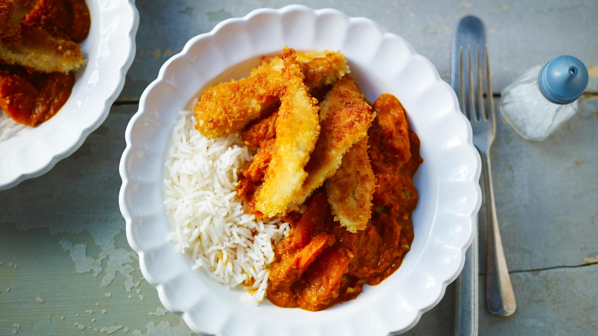

Katsu Curry
Home

Description
Crispy golden chicken, a rich, mild Japanese curry sauce and fluffy rice. It's easy to see why chicken katsu curry is a favorite.
Ingredients
For 4 servings:
For the Sauce
- 1 onion, chopped
- 1 carrot, chopped
- 1 tbsp sunflower oil
- 2 garlic cloves, crushed or finely chopped
- 2 tsp grated ginger
- 1 tbsp medium curry powder
- 1 tbsp plain flour
- 18fl oz chicken stock
- 1-2 tbsp soy sauce
- freshly ground black pepper
For the chicken
- 14oz chicken mini fillets or 2 large chicken breasts, cut into strips
- 1 tbsp plain flour
- 1 free-range egg, lightly beaten
- 3 1/2 oz dried breadcrumbs
- 3 tbsp sunflower oil
- jasmine rice, to serve
Steps
- To make the sauce, put the onion, carrot and oil into a saucepan. Cook over a low–medium heat for 4–5 minutes, stirring frequently, until soft but not coloured.
- Add the garlic, ginger and curry powder and cook for a minute, stirring often. Add the flour, mix well and cook for a further 30 seconds. Gradually add the stock, stirring constantly to make a smooth sauce. Bring slowly to the boil, reduce to a simmer and cook gently for 10 minutes until smooth and thickened.
- Blend the sauce until smooth using a stick blender. Season to taste with soy sauce and pepper. Set aside while you make the chicken.
- To prepare the chicken, tip the flour onto a plate, the beaten egg onto another and the breadcrumbs onto a baking tray.
- Using one hand, coat a chicken fillet in flour and shake off the excess. Next dip into the beaten egg to coat and shake off any excess. Finally put the chicken into the breadcrumbs and turn gently so that each piece is evenly coated. Repeat until all the chicken is coated.
- Heat the oil in a large frying pan over a medium heat. Add half of the chicken pieces and cook for about 3 minutes on each side, or until golden. Remove from the pan and keep warm while you fry the remaining chicken.
- Reheat the katsu sauce gently. Serve the crisp chicken with steamed rice and the curry sauce poured over.